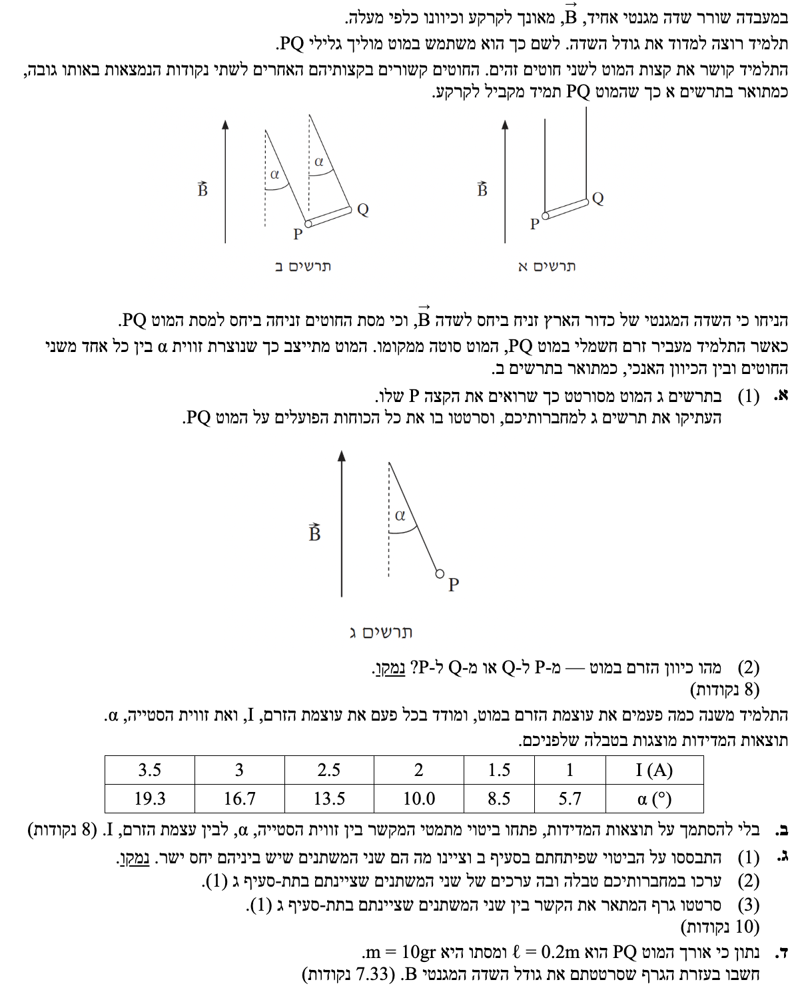
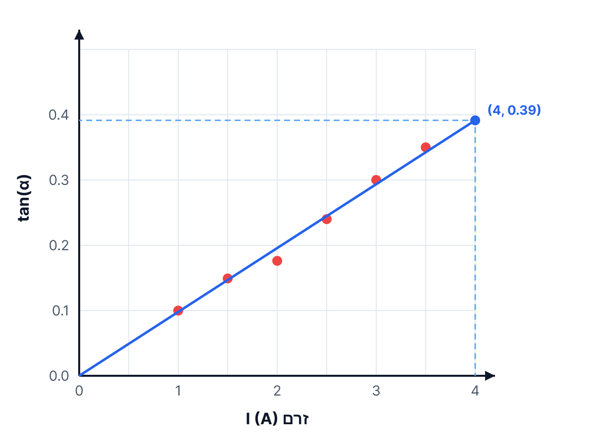

בשאלה זו נעסוק בכוח מגנטי הפועל על תיל נושא זרם (כוח לפלס), ניתוח כוחות בשיווי משקל (סטטיקה), וניתוח גרפי של תוצאות ניסוי.

לסרטט תרשים כוחות (FBD - Free Body Diagram) הפועלים על המוט, כפי שהוא נראה בתרשים ג'.
במצב של שיווי משקל אנו מסתמכים על החוק הראשון של ניוטון: \(\Sigma\vec{F} = 0\). הכוחות הפועלים הם כוח הכובד מטה, מתיחות החוטים לאורך החוט, וכוח מגנטי הפועל במאונך לזרם ולשדה.
הכוחות הפועלים על המוט:
1. כוח הכובד (\(mg\)): פועל תמיד כלפי מטה (מרכז כדור הארץ).
2. מתיחות החוטים (\(T\)): פועל לאורך החוט, כלפי מעלה ובזווית \(\alpha\) לאנך. כיוון שמסתכלים מהצד, החץ מסמל את שקול המתיחויות (או מתיחות של חוט אחד אם נניח שהתרשים מייצג חתך, למטרת הניתוח הפיזיקלי נסמן כ-\(T\)).
3. הכוח המגנטי (\(F_B\)): מכיוון שהמוט סטה ימינה (כפי שרואים בתרשים ג'), הכוח האופקי היחיד שיכול לדחוף אותו לשם הוא הכוח המגנטי. לכן כיוונו אופקי ימינה.
לקבוע האם הזרם זורם מ- P ל- Q, או מ- Q ל- P, ולנמק.
נשתמש בכלל יד ימין (עבור כוח על תיל נושא זרם):
אגודל = כיוון הזרם (\(I\)), אצבעות = כיוון השדה (\(\vec{B}\)), כיוון כף היד הדוחפת = כיוון הכוח (\(\vec{F}\)).
*הערה: קיימות מספר וריאציות לכלל (למשל כלל הבורג או כלל כף יד ימין), כולן יתנו את אותה התוצאה.
נפעיל את כלל יד ימין ביחס לתרשים ג':
1. כיוון השדה המגנטי (\(\vec{B}\)) הוא כלפי מעלה - נכוון את האצבעות ישר כלפי מעלה.
2. כיוון הכוח (\(\vec{F}_B\)) הוא ימינה - נדרוש שכף היד תדחוף ימינה.
3. במצב כזה האגודל, שמייצג את כיוון הזרם (\(I\)), יצביע כעת פנימה אל תוך הדף.
מאחר ובתרשים ג' אנו רואים את נקודה P, והקצה Q נמצא פנימה לתוך הדף, זרם שנכנס פנימה אל תוך הדף פירושו שהוא זורם מן הקצה הקרוב P אל הקצה הרחוק Q.
לפתח ביטוי מתמטי המקשר בין זווית הסטייה \(\alpha\) לבין עוצמת הזרם \(I\).
1. החוק הראשון של ניוטון (שיווי משקל): \(\Sigma\vec{F} = 0\). נפרק למערכת צירים: \(\Sigma F_x = 0\) , \(\Sigma F_y = 0\).
2. כוח מגנטי על תיל נושא זרם: \(F_B = I l B \sin\theta\).
הערה חשובה: הזווית \(\theta\) בנוסחה זו היא הזווית בין המוט לבין השדה המגנטי. המוט אופקי והשדה אנכי, ולכן \(\theta = 90^\circ\), ו- \(\sin(90^\circ)=1\). אל תבלבלו זווית זו עם זווית הסטייה \(\alpha\)!
נגדיר מערכת צירים: ציר \(x\) אופקי ימינה, ציר \(y\) אנכי מעלה. נרשום את משוואות הכוחות על פי תרשים הכוחות שלנו:
\[ \Sigma F_y = 0 \Rightarrow T \cos\alpha - mg = 0 \] \[ (1) \quad T \cos\alpha = mg \]בציר האופקי:
\[ \Sigma F_x = 0 \Rightarrow T \sin\alpha - F_B = 0 \] \[ (2) \quad T \sin\alpha = F_B \]נחלק את משוואה (2) במשוואה (1) כדי להיפטר מהנעלם \(T\) (מתיחות החוטים):
\[ \frac{T \sin\alpha}{T \cos\alpha} = \frac{F_B}{mg} \] \[ \tan\alpha = \frac{F_B}{mg} \]כעת, נציב את הביטוי לכוח המגנטי \(F_B = I l B\):
\[ \tan\alpha = \frac{I l B}{mg} \]נסדר את הביטוי כך שיראה את הקשר בין \(\alpha\) ל- \(I\):
לציין מה הם שני המשתנים שיש ביניהם יחס ישר, ולנמק.
משוואת קו ישר כללית היא מהצורה: \(y = ax + b\). במקרה של יחס ישר, הגרף עובר דרך ראשית הצירים (\(b=0\)) והמשוואה מצטמצמת לצורה: \(y = k \cdot x\).
נסתכל על הביטוי שפיתחנו:
\[ \underbrace{\tan\alpha}_{y} = \underbrace{\left( \frac{l B}{mg} \right)}_{\text{Slope (k)}} \cdot \underbrace{I}_{x} \]
הפרמטרים \(l\) (אורך המוט), \(B\) (שדה מגנטי), \(m\) (מסה) ו- \(g\) (תאוצת הכובד) הם כולם גדלים קבועים במהלך הניסוי.
לכן, הביטוי בתוך הסוגריים \(\left( \frac{l B}{mg} \right)\) הוא קבוע.
מכאן מתקבל קשר ליניארי ישר בין הפונקציה \(\tan\alpha\) לבין הזרם \(I\).
לערוך טבלה הכוללת את ערכי שני המשתנים שנמצאו בסעיף ג'(1), כלומר \(I\) ו- \(\tan\alpha\).
שימוש במחשבון לחישוב פונקציית הטנגנס (יש לוודא שהמחשבון מכוון למעלות - Degrees).
נחשב את ערך ה- \(\tan\alpha\) עבור כל זווית בטבלה. נעגל ל-3 ספרות אחרי הנקודה לשם דיוק הגרף.
| \(I\) (A) | 1 | 1.5 | 2 | 2.5 | 3 | 3.5 |
|---|---|---|---|---|---|---|
| \(\alpha\) (°) (נתון מקורי) |
5.7 | 8.5 | 10.0 | 13.5 | 16.7 | 19.3 |
| \(\tan\alpha\) | 0.0998 | 0.149 | 0.176 | 0.240 | 0.300 | 0.350 |
* לדוגמה החישוב הראשון: \(\tan(5.7^\circ) \approx 0.0998\).
לסרטט גרף המבטא את הקשר הליניארי. ציר ה-x יהיה הזרם \(I\), וציר ה-y יהיה \(\tan\alpha\).
אנו מעבירים קו מגמה ליניארי שממזער את סכום הסטיות הריבועיות מן הנקודות. מכיוון שלפי המודל התאורטי מדובר ביחס ישר, בפתרון זה בוחרים את קו המגמה המיטבי מבין כל הקווים העוברים בראשית הצירים.

לחשב בעזרת הגרף שסרטטנו את גודל השדה המגנטי \(B\).
1. חישוב שיפוע גרף מישר מגמה נבחר: \(m_{graph} = \frac{\Delta y}{\Delta x} = \frac{y_2 - y_1}{x_2 - x_1}\).
2. השוואת השיפוע הניסיוני (מהגרף) לשיפוע התאורטי (מהמשוואה): \(m_{graph} = \frac{l B}{mg}\).
נבחר שתי נקודות על קו המגמה שאפשר לקרוא מן הגרף בקירוב: הראשית \((0, 0)\) והנקודה \((4, 0.39)\). כעת נחשב את השיפוע לפי נוסחת השיפוע:
\[ m_{graph} \approx \frac{\Delta y}{\Delta x} = \frac{0.39 - 0}{4 - 0} = \frac{0.39}{4} = 0.0975 \text{ A}^{-1} \approx 0.098 \text{ A}^{-1} \]כעת, נשווה את ערך השיפוע שמצאנו לביטוי התאורטי של השיפוע:
\[ 0.0975 \approx \frac{l B}{mg} \]נציב את הנתונים המספריים (מומרים למערכת MKS): \(l = 0.2\), \(m = 0.01\), \(g = 10\):
\[ 0.0975 \approx \frac{0.2 \cdot B}{0.01 \cdot 10} \] \[ 0.0975 \approx \frac{0.2 \cdot B}{0.1} \]נכפול ב- \(0.1\) את שני צידי המשוואה:
\[ 0.00975 \approx 0.2 \cdot B \] \[ B \approx \frac{0.00975}{0.2} \] \[ B \approx 0.04875 \text{ T} \approx 0.049 \text{ T} \approx 0.05 \text{ T} \]